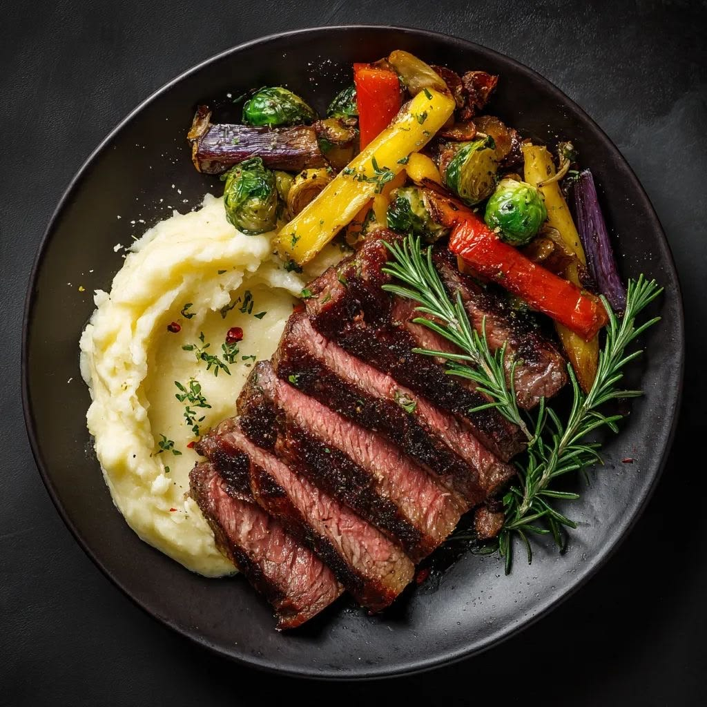

Beefsteak là món ăn yêu thích của tôi. Tôi thường ăn món này vào cuối tuần. Hương vị thơm ngon và mềm mại của thịt bò kết hợp với khoai tây chiên giòn tạo nên một trải nghiệm ẩm thực tuyệt vời.
Xem thêmThẻ khi không có thuộc tính title thì có làm thay đổi gì trên màn hình không? Thẻ là thẻ block hay inline?
Thẻ khi có thuộc tính title sẽ hiển thị một tooltip khi người dùng di chuột qua thẻ đó. Nếu không có thuộc tính title, thì không có tooltip nào xuất hiện. Thẻ là thẻ inline, nghĩa là nó không tạo ra một dòng mới và chỉ chiếm không gian vừa đủ cho nội dung bên trong nó.